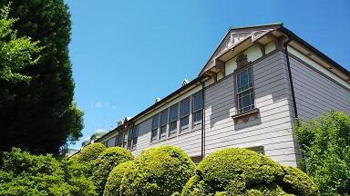
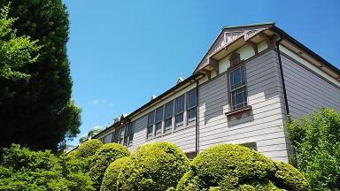
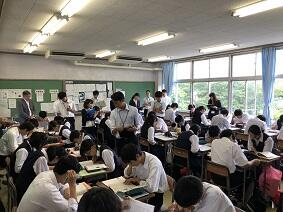
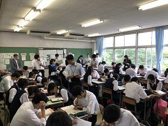

文字
背景
行間


2018年6月の記事一覧
閑話 黄金比 その４
今回は、「正五角形をコンパスと定規で作図してみよう。」ということでヒントととなる？お話をします。
左図は、1辺の長さが１の正五角形ABCDEです。△DABは正五角形ABCDEの対角線を２辺とする二等辺三角形です。頂角が 36° 、両底角は、72° となります。（なぜこうなるかは各自で確かめてください）
今、∠DAB の角の二等分線と辺DB との交点を G とします。
問１ 点G は正五角形ABCDEの対角線DBをどのような比に分ける点でしょうか。
問２ 正五角形ABCDEの対角線の長さはいくつになるでしょう。
問３ 与えられた一片の長さをもとに正五角形をコンパスと定規を使って作図するには何が作れればよいでしょうか。それをどのように利用すればよいでしょうか。
問４ 与えられた一片の長さをもとに正五角形をコンパスと定規を使って作図してみてください。
左図は、1辺の長さが１の正五角形ABCDEです。△DABは正五角形ABCDEの対角線を２辺とする二等辺三角形です。頂角が 36° 、両底角は、72° となります。（なぜこうなるかは各自で確かめてください）
今、∠DAB の角の二等分線と辺DB との交点を G とします。
問１ 点G は正五角形ABCDEの対角線DBをどのような比に分ける点でしょうか。
問２ 正五角形ABCDEの対角線の長さはいくつになるでしょう。
問３ 与えられた一片の長さをもとに正五角形をコンパスと定規を使って作図するには何が作れればよいでしょうか。それをどのように利用すればよいでしょうか。
問４ 与えられた一片の長さをもとに正五角形をコンパスと定規を使って作図してみてください。
関東甲信地方梅雨明け（びっくり）
 本日6月29日、気象庁は関東甲信地方が梅雨明けしたとみられると発表しました。(平成30年の梅雨入りと梅雨明け（速報値）)統計を取り始めて以来、関東甲信地方が6月に梅雨明けするのは初めてのことだそうです。これまで関東甲信地方で最も早く梅雨が明けたのは2001年の7月1日だったそうです。
本日6月29日、気象庁は関東甲信地方が梅雨明けしたとみられると発表しました。(平成30年の梅雨入りと梅雨明け（速報値）)統計を取り始めて以来、関東甲信地方が6月に梅雨明けするのは初めてのことだそうです。これまで関東甲信地方で最も早く梅雨が明けたのは2001年の7月1日だったそうです。梅雨明けの時期ですが、平年と比べると(7月21日ごろ)より22日早く、昨年と比べても(7月6日ごろ)より7日早い梅雨明けだそうです。
梅雨の期間ですが、今年は梅雨入りしたのが6月6日ですから梅雨明け前日の6月28日までの日数は23日間となります。これは、梅雨の期間が6月11日から7月4日までだった1978年に並んで1番の短さだそうです。（梅雨入り・明けの時期は、秋に再検討され、見直されることもあるそうです）
いずれにしても、このところ一気に真夏に入ってしまったような暑さになっていたので、へんだなぁと思っていましたが、まさか、もう梅雨が明けてしまうなんて本当にびっくりです。熱中症対策（校長室もこのところ連日30℃です）や恵みの雨が少なかったことによる水不足対策にしっかり取り組まないといけないですね。
いずれにしても、このところ一気に真夏に入ってしまったような暑さになっていたので、へんだなぁと思っていましたが、まさか、もう梅雨が明けてしまうなんて本当にびっくりです。熱中症対策（校長室もこのところ連日30℃です）や恵みの雨が少なかったことによる水不足対策にしっかり取り組まないといけないですね。
閑話 黄金比 その３
 縦横の辺の長さの比が黄金比になっている長方形を黄金長方形と呼びます。左上図で言えば、AB：BC＝1 : Φ
縦横の辺の長さの比が黄金比になっている長方形を黄金長方形と呼びます。左上図で言えば、AB：BC＝1 : Φ ここで、この長方形から正方形を切り出すと残った長方形も黄金長方形になります。
左上図でいえば、長方形ABCDから、正方形ABFEを切り取った残りの長方形DEFCが黄金長方形です。
もとの長方形ABCDの辺の長さと小さな長方形DEFCの辺の長さを比べると $$\frac{1}{\phi}$$ 倍となります。ここで、また長方形DEFCから正方形DEGHを切り取った残りの長方形CHGFもまた黄金長方形となり、辺の長さは $$\frac{1}{\phi}$$ 倍となります。この操作を無限に続けていくとどんどん小さな黄金長方形ができ、そのたびに辺の長さは $$\frac{1}{\phi}$$ 倍となります。
左上図のように任意に選んだ元の長方形とそれから正方形を切り取って残った長方形のそれぞれの対角線を引くとどれも同じ一点で交わります。無限に小さくなる長方形は、この点に収束していくわけです。
左下図は、正方形部分に4分の１円を描いて作ったらせんです。きれいですね。
問１ 黄金長方形を作図してみよう。
問２ 黄金比 その２で示した連分数と今回の黄金長方形の分割を考察してみよう。
はやぶさ２がRyuguへ
地球から約３億キロ（地球と太陽の距離の2倍）離れた小惑星Ryugu（リュウグウ）を目指して2014年12月に打ち上げられた小惑星探査機「はやぶさ２」が、いよいよ本日、リュウグウに到着すると国立研究開発法人宇宙航空研究開発機構（JAXA）から発表されました。
また、「はやぶさ２」が24日にリュウグウから約４０キロに近づいたときに撮影した画像にはそろばん玉のような形をしたリュウグウとその表面の岩の塊やクレーターが鮮明に確認できるものが公開されています。（JAXAはやぶさ２プロジェクト）
JAXAでは、「はやぶさ2」のリュウグウの高度20㎞地点への到着に際して、本日16時00分～17時00分（予定）に記者会見を開催するそうです。これまで3年半の長旅を緻密な軌道決定と軌道計算に支えられ幾度かの軌道修正を経て飛んできた「はやぶさ２」の今回の小惑星サンプルリターンのミッションには、惑星の起源だけでなく地球の海の水の起源や生命の原材料をも探求するミッションが含まれているということで、多くの謎の解明に向けてこれから行われる数々のミッションの成功がとても楽しみです。
また、「はやぶさ２」が24日にリュウグウから約４０キロに近づいたときに撮影した画像にはそろばん玉のような形をしたリュウグウとその表面の岩の塊やクレーターが鮮明に確認できるものが公開されています。（JAXAはやぶさ２プロジェクト）
JAXAでは、「はやぶさ2」のリュウグウの高度20㎞地点への到着に際して、本日16時00分～17時00分（予定）に記者会見を開催するそうです。これまで3年半の長旅を緻密な軌道決定と軌道計算に支えられ幾度かの軌道修正を経て飛んできた「はやぶさ２」の今回の小惑星サンプルリターンのミッションには、惑星の起源だけでなく地球の海の水の起源や生命の原材料をも探求するミッションが含まれているということで、多くの謎の解明に向けてこれから行われる数々のミッションの成功がとても楽しみです。
閑話 黄金比 その２
$$x=1+\frac{1}{1+\frac{1}{1+\frac{1}{1+\frac{1}{1+\cdots}$$ と置くと
$$x=1+\frac{1}{x}$$ とかける。
問１ $$x$$ はどんな値でしょう。
問２ Φ を黄金比とします。 $${\phi}^{n}$$ を $${\phi}^{n-1}$$ と $${\phi}^{n-2}$$ で表わしてください。
古代エジプト人は Φ を知っていた？pyramidとΦのロマン
ピラミッドが左図のように、底面の１辺の長さが 2a の正方形の四角錐で、各側面の三角形の面積がピラミッドの高さ h を一辺とする正方形の面積に等しくなっていたとします。このとき、各側面の三角形の高さを s として、次の問を考えてください。
問３ は、どんな値でしょう。
は、どんな値でしょう。
ピラミッドが左図のように、底面の１辺の長さが 2a の正方形の四角錐で、各側面の三角形の面積がピラミッドの高さ h を一辺とする正方形の面積に等しくなっていたとします。このとき、各側面の三角形の高さを s として、次の問を考えてください。
問３
第45回鍋山祭 書道パフォーマンス


 本日11:00に行われた書道パフォーマンス。本校の中庭で多くのギャラリーの見守る中、書道部の書道ガールズが、気持ちを一つに、詩のことばに心をこめて一気に書き上げました。素晴らしいの一言です。
本日11:00に行われた書道パフォーマンス。本校の中庭で多くのギャラリーの見守る中、書道部の書道ガールズが、気持ちを一つに、詩のことばに心をこめて一気に書き上げました。素晴らしいの一言です。昨日、今日と連日PTAの広報委員会の皆様がこのパフォーマンスも含め鍋山祭を取材していただいています。本当にありがとうございます。PTA広報が楽しみです。
第45回鍋山祭 第2日

 本日は、鍋山祭の第2日目です。本日の発表は一般公開となっております。
本日は、鍋山祭の第2日目です。本日の発表は一般公開となっております。鍋山祭確認クイズ １．参加団体は、いくつでしょう。 ２．演劇鑑賞の整理券の配布場所・時間は。 ３．各調理等食品提供団体のメニューは。 ４．各部・同好会の特別企画の開始時間は。５．PTAバザーの場所は。
鍋山祭心に刻もうクイズ １．あなたのお気に入りの団体は。(投票がありますので、お願いします） ２．装飾が美しかった、工夫されてた団体は。３．鍋山祭一番の思い出は。
（右の写真は、私のお気に入りの工芸部の藍染ハンカチと美術部の缶バッチです。）
ご来場の際は、お気をつけてお越し下さい。お待ちしてます。
第45回鍋山祭 第１日


 いよいよ、文化委員会を中心に全生徒、職員で準備してきた今年度の鍋山祭が始まりました。各クラスや委員会、部活動・同好会の発表はどこも熱が入っていてすばらしいものとなっています。部活動展示のほんの一端をご紹介いたします。
いよいよ、文化委員会を中心に全生徒、職員で準備してきた今年度の鍋山祭が始まりました。各クラスや委員会、部活動・同好会の発表はどこも熱が入っていてすばらしいものとなっています。部活動展示のほんの一端をご紹介いたします。工芸部の藍染作品（手拭いやコースターなど）や陶芸作品の展示・販売、彫金や鋳造作品の展示、写真部の作品展示とカレンダー等の販売、華道部の生け花展示。なお、生け花の水盤は、工芸部の生徒の作品となっています。美術部では、作品展示と缶バッチの展示・販売をしています。ご来場の際は、ぜひともご覧いただき感想をいただけると幸いです。また、生物部では、佐倉高校の豊かな樹木に着目し来校者がそれらを鑑賞できるよう発表がされていました。
明日は、通常の会場での展示発表に加えて部活動毎に特別企画が目白押しです。
なお、ご来場者には、文化委員会で丹精を込めて作成した見やすい鍋山祭のパンフレットがありますので御見学の際の参考としていただけると幸いです。
The summer solstice 2018


今日は、二十四節気の第10番目の夏至です。佐倉市では、日の出の時間が4:24、日の入りが18:59です。佐倉市の緯度では昼の時間と夜の時間との比は、約1.6です。本日は、一年でもっとも日が長くなる日ですので佐倉高校にとって鍋山祭の準備日として最適な１日といえるのではないでしょうか。昨日の午後から校内は鍋山祭の会場へと装いを一変すべく槌音？が鳴り響いています。
生徒たちは、鍋山祭に向けて、熱い思いとともに多くの時間と労力をかけて準備してきましたが、いよいよその全貌を現す時が近づいてきました。６月23日（土）は、一般公開日ですのでお楽しみにしてください。
話は代わりますが、昨日は、第100回全国高等学校野球選手権記念東千葉・西千葉大会の試合の組み合わせ(千葉県高等学校野球連盟HPへ)が発表になりました。本校野球部は西千葉大会に出場します。本校の初戦は四街道北高校で、大会日程が順調に進めば、7月13日の青葉の森公園球場で行われる第１試合（試合開始は９時）となります。皆さんの熱い応援をよろしくお願いします。
閑話 黄金比 その１
先日、参加した千葉県高等学校教育研究会数学部会の春季研究大会の講演で、講師の先生が和算の問題を現在使える公式を使わずに解くとしたらというお話しのなかで「黄金比」を使って解くというものがあり、そういえば「黄金比」自体とっても興味深いものであることを思い出し、今回はその一端に触れてみたい。
黄金比は、エウクレイデス（ユークリッド）が「原論」で明快な定義を与えている。そこでは線分を単純に分けて得られる線分の長さの比で次のように定義し「外中比」（黄金比のこと）と呼んでいる。
 「線分全体と長い切片との比が、長い切片と短い切片との比になる場合、線分は外中比に切り分けられたという。」左図でいえば、
「線分全体と長い切片との比が、長い切片と短い切片との比になる場合、線分は外中比に切り分けられたという。」左図でいえば、
 が成り立っているということ。つまり、短い切片CBの長さを基準にして、$$AB=x,CB=1$$ とおくと $$\frac{x+1}{x}=\frac{x}{1}$$ が成り立つ。よって、両辺に$$x$$を掛けて整理すると、$$x^2-x-1=0$$ ・・・① が得られる。
が成り立っているということ。つまり、短い切片CBの長さを基準にして、$$AB=x,CB=1$$ とおくと $$\frac{x+1}{x}=\frac{x}{1}$$ が成り立つ。よって、両辺に$$x$$を掛けて整理すると、$$x^2-x-1=0$$ ・・・① が得られる。
問２ 問１で求めた正の解をΦ（ファイ）とする。Φの値はどのくらいだろう。
黄金比は、エウクレイデス（ユークリッド）が「原論」で明快な定義を与えている。そこでは線分を単純に分けて得られる線分の長さの比で次のように定義し「外中比」（黄金比のこと）と呼んでいる。
「線分全体と長い切片との比が、長い切片と短い切片との比になる場合、線分は外中比に切り分けられたという。」左図でいえば、問１ $$x$$の2次方程式①を解いてみよう。
問２ 問１で求めた正の解をΦ（ファイ）とする。Φの値はどのくらいだろう。
関数電卓等で近似値を確かめてみよう。
問３ 問２でΦの近似値を関数電卓等でΦ２ や $$\frac{1}{\phi}$$ の近似値を確かめてみよう。
何か、気づいたことはありますか。
問４ ΦとΦ２ 、 $$\frac{1}{\phi}$$ との関係を考えてみよう。
問５ 下の数式の値はいくつでしょう。
$$\sqrt{1+\sqrt{1+\sqrt{1+\sqrt{1+\cdots } } } }$$
以上、興味をもった生徒は校長室まで話に来てください。
次回は 黄金比の連分数表現について
$$1+\frac{1}{1+\frac{1}{1+\frac{1}{1+\cdots}$$
問３ 問２でΦの近似値を関数電卓等でΦ２ や $$\frac{1}{\phi}$$ の近似値を確かめてみよう。
何か、気づいたことはありますか。
問４ ΦとΦ２ 、 $$\frac{1}{\phi}$$ との関係を考えてみよう。
問５ 下の数式の値はいくつでしょう。
$$\sqrt{1+\sqrt{1+\sqrt{1+\sqrt{1+\cdots } } } }$$
以上、興味をもった生徒は校長室まで話に来てください。
次回は 黄金比の連分数表現について
$$1+\frac{1}{1+\frac{1}{1+\frac{1}{1+\cdots}$$
歌声は世代を超えて


 今日は、佐倉高校同窓会である鹿山会の総会が開催されました。総会の会議終了後、本校の音楽部が「ア・カペラで行こう～佐倉高校音楽部＜鹿山会スペシャルステージ２０１８＞」と題して、その素晴らしいハーモニーを諸先輩方の前で披露してくれました。音楽部はア・カペラ・コーラスを中心にルネッサンス期の音楽から現代ポップスまで、幅広いジャンルの合唱に取り組んでおり、音楽を愛する心や伝統を受け継いで活動しています。今回のステージでは最後に参加者全員で合唱できるように校歌を選曲してくれました。世代を超えた校歌の響きは、いつもに増してすばらしいものでした。７０歳以上の差がある人たちが、心ひとつに歌える校歌の素晴らしさをあらためて感じました。素敵な時間を演出してくださった鈴木先生、秋保先生、音楽部の皆さん本当にありがとうございました。
今日は、佐倉高校同窓会である鹿山会の総会が開催されました。総会の会議終了後、本校の音楽部が「ア・カペラで行こう～佐倉高校音楽部＜鹿山会スペシャルステージ２０１８＞」と題して、その素晴らしいハーモニーを諸先輩方の前で披露してくれました。音楽部はア・カペラ・コーラスを中心にルネッサンス期の音楽から現代ポップスまで、幅広いジャンルの合唱に取り組んでおり、音楽を愛する心や伝統を受け継いで活動しています。今回のステージでは最後に参加者全員で合唱できるように校歌を選曲してくれました。世代を超えた校歌の響きは、いつもに増してすばらしいものでした。７０歳以上の差がある人たちが、心ひとつに歌える校歌の素晴らしさをあらためて感じました。素敵な時間を演出してくださった鈴木先生、秋保先生、音楽部の皆さん本当にありがとうございました。 夢に向かって
 ５月３０日から６月１９日まで、本校の卒業生９名が教育実習に取り組んでいます。実習生は教職に就く夢に向かって、一生懸命教材研究をし教壇に立っています。昨日から研究授業が始まりましたが、実習生の授業は、生徒が思考を深めることのできる、よく工夫された授業となっていました。夢に向かって一生懸命教育実習に取り組んでいる先輩の姿は、生徒にとっても大きな刺激になっているようです。
５月３０日から６月１９日まで、本校の卒業生９名が教育実習に取り組んでいます。実習生は教職に就く夢に向かって、一生懸命教材研究をし教壇に立っています。昨日から研究授業が始まりましたが、実習生の授業は、生徒が思考を深めることのできる、よく工夫された授業となっていました。夢に向かって一生懸命教育実習に取り組んでいる先輩の姿は、生徒にとっても大きな刺激になっているようです。実習生の皆さんが立派な教師になることを願っています。
本日は校長先生が出張のため、教頭が書き込みました。
学而不思則罔
現在、本校では先生方がお互いに授業を見合う校内授業参観期間です。授業の良かった部分や改善点など他の先生と学び合う大変貴重な期間です。この期間を利用して岐阜大学の加藤教授、山口大学の鷹岡教授に本校の生徒の学びを深めるうえで、「学びをコントロールできる主体的な学習者となるべくICT活用の在り方」についてご教授いただける機会を得ることができ、訪問していただきました。生徒の手に馴染んだツールとしてICTが当たり前になってきている現在ではSGH、SSHの課題研究だけでなく、すべての学習活動において「主体的、対話的で深い学び」を進めるうえで、ICTの活用は大変有効で必須であります。新しい学習指導要領も視野に入れて研究を進めていきたいと思います。学習者が解答を求める過程での疑問を大切にして自分自身で腑に落ちるまでしっかりと考えきること。このような学びを繰り返すことできる学びの場を構築していきたいと強く思いました。
広報委員会
 今日は、朝からPTAの広報委員会の皆様がご多用な中、PTA会報第91号の第3回編集会議にいらしてお仕事をされています。今までも学校行事がある度に取材をしてくださり、生徒の活躍の様子を記録してくださっています。膨大な量の資料から、PTAの皆様へお渡しする会報を作成されるお仕事はとっても大変だと思います。
今日は、朝からPTAの広報委員会の皆様がご多用な中、PTA会報第91号の第3回編集会議にいらしてお仕事をされています。今までも学校行事がある度に取材をしてくださり、生徒の活躍の様子を記録してくださっています。膨大な量の資料から、PTAの皆様へお渡しする会報を作成されるお仕事はとっても大変だと思います。本当に、いつもありがとうございます。91号楽しみにしています。
関東大会0610－2


 お陰様で天候が危ぶまれましたが、競技中は、風はあったものの雨に降られることなく全日程を無事に終了することができました。関東高体連カヌー専門部の先生方、関東カヌー協会の皆さん精進湖観光協会の皆様ありがとうございました。選手の皆さんはとっても頑張ったと思います。関東大会に出場してレベルの高い競技を経験し、次のステップへの課題を見つけ、新たな目標に向かって今後の練習に生かせる多くの学びができたのではないでしょうか。いづれにしても本当にお疲れ様でした。
お陰様で天候が危ぶまれましたが、競技中は、風はあったものの雨に降られることなく全日程を無事に終了することができました。関東高体連カヌー専門部の先生方、関東カヌー協会の皆さん精進湖観光協会の皆様ありがとうございました。選手の皆さんはとっても頑張ったと思います。関東大会に出場してレベルの高い競技を経験し、次のステップへの課題を見つけ、新たな目標に向かって今後の練習に生かせる多くの学びができたのではないでしょうか。いづれにしても本当にお疲れ様でした。また、昨日から応援に来ていただいた保護者の皆様ありがとうございました。これからもよろしくお願いします。
関東大会0610


 今日はカヌーの関東大会の第2日で各種決勝が行われます。現在の天気は曇りなので、このまま競技中は雨が降らずに良いコンディションで競技が行えることを祈ります。カヌー部の生徒は朝のランニングに出かけました。話は違いますが、宿泊場所からほど近い所に天然記念物の「精進の大杉」があることを宮代先生に教えていただいたので、大杉のある村社諏訪神社に朝お詣りして大会の安全をお願いしてきました。その際、たまたまお会いした近所の方々に今日この後、雨が降らないか天気を聞いたところ「大丈夫じゃない」とおっしゃっていたのでほっとしています。選手の皆さんちょっと風があり寒いですが熱い思いで頑張ってください。
今日はカヌーの関東大会の第2日で各種決勝が行われます。現在の天気は曇りなので、このまま競技中は雨が降らずに良いコンディションで競技が行えることを祈ります。カヌー部の生徒は朝のランニングに出かけました。話は違いますが、宿泊場所からほど近い所に天然記念物の「精進の大杉」があることを宮代先生に教えていただいたので、大杉のある村社諏訪神社に朝お詣りして大会の安全をお願いしてきました。その際、たまたまお会いした近所の方々に今日この後、雨が降らないか天気を聞いたところ「大丈夫じゃない」とおっしゃっていたのでほっとしています。選手の皆さんちょっと風があり寒いですが熱い思いで頑張ってください。 関東大会0609－２


 カヌー関東大会第1日はお陰様で、開会式から1日目に予定していた準決勝までの競技を日程どおり行うことができました。明日は決勝を残すのみです。開会式の後、千葉県選手団（小見川高校と佐倉高校）は、菅澤先生から試合前のアドバイスを受け、皆で円陣を組んで気合を入れました。
カヌー関東大会第1日はお陰様で、開会式から1日目に予定していた準決勝までの競技を日程どおり行うことができました。明日は決勝を残すのみです。開会式の後、千葉県選手団（小見川高校と佐倉高校）は、菅澤先生から試合前のアドバイスを受け、皆で円陣を組んで気合を入れました。今日は、小見川高校はシングルやペア、フォア競技で決勝に進出し、佐倉高校は、シングル競技では惜しくも決勝に進めませんでしたが、ペア、フォア競技のすべての競技で決勝に進出しました。両校ともおめでとうございます。明日は今日以上に実力を存分に発揮できて、良い成績が出せるといいですね。いずれにしても、ここまで来たら自分と仲間を信じて、競技を思いっきり楽しんでほしいと思います。明日の競技開始は９：００です。天気がとても心配です。今日も遠いところ応援に来てくださった保護者の皆さんやOBの皆さんありがとうございました。
関東大会0609
投稿日時 : 2018/06/09
 sakura-h
sakura-h
今日はカヌー関東大会の初日です。早朝から天気に恵まれて各都県から出場する選手たちが各々練習に励んでいます。
お陰様で、今日は良い大会が開催できそうです。
お陰様で、今日は良い大会が開催できそうです。
関東大会前日


 明
明 日から2日間の予定で関東高等学校カヌー大会第２３回関東高等学校カヌー選手権大会が山梨県南都留郡河口湖町精進湖カヌー競技場で開催されます。まずは、本当に間近に見える富士山の横で競技ができる素晴らしさを感じました。また、精進湖の水がとてもきれいで稚魚が岸部にいっぱい泳いでいました。それにしても、山の天候の変化は激しいもので、昼過ぎまで富士山のお姿が大変くっきりと見えていたのもつかの間、風が強くなってきたなと思う間もなく、雲が出てきてたちまち見えなくなってしまいました。千葉県から参加の選手は皆とても仲が良く、みんなで、一緒にトラックで運んできた艇を降し、自分たちのベースとなる場所にテントを張り、競技場に慣れるための練習を行っていました。また、明日からの競技に出場するための検艇（艇の重量の検査）やライフジャケットの浮力の検査等を受けていました。
日から2日間の予定で関東高等学校カヌー大会第２３回関東高等学校カヌー選手権大会が山梨県南都留郡河口湖町精進湖カヌー競技場で開催されます。まずは、本当に間近に見える富士山の横で競技ができる素晴らしさを感じました。また、精進湖の水がとてもきれいで稚魚が岸部にいっぱい泳いでいました。それにしても、山の天候の変化は激しいもので、昼過ぎまで富士山のお姿が大変くっきりと見えていたのもつかの間、風が強くなってきたなと思う間もなく、雲が出てきてたちまち見えなくなってしまいました。千葉県から参加の選手は皆とても仲が良く、みんなで、一緒にトラックで運んできた艇を降し、自分たちのベースとなる場所にテントを張り、競技場に慣れるための練習を行っていました。また、明日からの競技に出場するための検艇（艇の重量の検査）やライフジャケットの浮力の検査等を受けていました。各県代表の委員長会議や監督会議での丁寧な注意事項の確認はもとより、１都7県からお集まりの先生方やカヌー協会の皆様のおかげで安全安心な大会運営が準備段階からしっかりとなされていることが改めてわかりました。皆様に本当に感謝です。明日から行われる各種競技で選手が存分にそのもてる力を発揮できる大会となることを期待します。
合わせて、この土日に行われるソフトボール、卓球、ソフトテニス、弓道の県大会に出場する佐倉高校の選手の皆さん、今までやってきた来たことや仲間と自分を信じて頑張ってください。
百花繚乱２

本日は、校長先生がカヌーの関東専門部長として、関東大会に出かけているため、教頭が書き込みます。先日の生徒総会で発表された佐倉高校スローガン「百花繚乱～それぞれの花を咲かせよう～」が本館２階に掲示されています。まさに校地では、６月の花がいろいろと咲き始めました（写真）。校舎内では文化祭の準備がはじまり、クラスの特色がそれぞれ表われ、たくさんの花が咲き始めたようです。
部活動もそれぞれの練習の成果を発揮する千葉県総合体育大会（県大会）が始まっています。この土日は、ソフトボール、卓球、ソフトテニス、弓道が県大会に挑みます。健闘を祈ります。なお、写真は小林教頭先生が撮影しました。


学校訪問（臼井西中学校保護者様）

 本日は、佐倉市立臼井西中学校の保護者の方々が本校の見学にいらっしゃいました。野村教頭先生の案内で、地域交流施設、庭園、東郷池、校長室や事務室のある記念館、そしてメインとなる生徒の授業の様子など熱心にかつ楽しそうに見学されていらっしゃいました。また、SGHやSSHの活動や海外での生徒の活動の様子について掲示物を御覧になりながら説明（写真左）に耳を傾けていらっしゃいました。次の訪問予定の学校もあるということから限られた時間の中でのご見学となり、十分にご理解いただけたかが心配ですが、教頭先生の楽しいトークと合わせて明るく真摯に取り組む授業の様子など学校の雰囲気は感じ取っていただけたのではないかと思います。本日の訪問ありがとうございました。8月1日、2日の学校説明会もお持ちしております。
本日は、佐倉市立臼井西中学校の保護者の方々が本校の見学にいらっしゃいました。野村教頭先生の案内で、地域交流施設、庭園、東郷池、校長室や事務室のある記念館、そしてメインとなる生徒の授業の様子など熱心にかつ楽しそうに見学されていらっしゃいました。また、SGHやSSHの活動や海外での生徒の活動の様子について掲示物を御覧になりながら説明（写真左）に耳を傾けていらっしゃいました。次の訪問予定の学校もあるということから限られた時間の中でのご見学となり、十分にご理解いただけたかが心配ですが、教頭先生の楽しいトークと合わせて明るく真摯に取り組む授業の様子など学校の雰囲気は感じ取っていただけたのではないかと思います。本日の訪問ありがとうございました。8月1日、2日の学校説明会もお持ちしております。 芒種２
 今日は、千葉県の高等学校初任者研修の一環で、英語科の初任の先生が勤務校を離れて行う校外研修が本校を会場に行われました。今回の研修の目的は、①先輩教師の展開する授業を参観して、授業展開の在り方を学ぶ ②「個を生かす学習指導」の在り方について協議する ことです。指導者である本校英語科の羽計先生が先輩としての授業を公開してくれました。”Predictions of the Future”を教材として英語の4技能をバランスよく育成する授業展開のなかで、生徒は自分の考えをまとめたり、それを友人と共有し、友人の考えや自分の意見へのコメントを受けて自分の考えをさらに深めたりする学習活動をいつもの授業通り積極的に行っていました。この授業にもっと参加したいなと思える授業の内容と雰囲気の良さを感じました。また、廊下にあふれるほど多くの本校の先生方が授業を参観に来ていたことは本校のひとつ良さだと思います。このことはきっと私だけでなく皆さんそう感じていることだと思います。今日本校で研修を行った先生方にはひとつでも多くの参考となるなるものをお持ち帰りいただき、明日からの授業に役立てていただければ幸いです。
今日は、千葉県の高等学校初任者研修の一環で、英語科の初任の先生が勤務校を離れて行う校外研修が本校を会場に行われました。今回の研修の目的は、①先輩教師の展開する授業を参観して、授業展開の在り方を学ぶ ②「個を生かす学習指導」の在り方について協議する ことです。指導者である本校英語科の羽計先生が先輩としての授業を公開してくれました。”Predictions of the Future”を教材として英語の4技能をバランスよく育成する授業展開のなかで、生徒は自分の考えをまとめたり、それを友人と共有し、友人の考えや自分の意見へのコメントを受けて自分の考えをさらに深めたりする学習活動をいつもの授業通り積極的に行っていました。この授業にもっと参加したいなと思える授業の内容と雰囲気の良さを感じました。また、廊下にあふれるほど多くの本校の先生方が授業を参観に来ていたことは本校のひとつ良さだと思います。このことはきっと私だけでなく皆さんそう感じていることだと思います。今日本校で研修を行った先生方にはひとつでも多くの参考となるなるものをお持ち帰りいただき、明日からの授業に役立てていただければ幸いです。 芒種

 今日は、太陽の黄経が75°にあたる二十四節気でいうところの芒種（ぼうしゅ）です。イネやムギなどの芒(のぎ)のある作物の種を播(ま)く時節というところから由来しているそうです。今は田植の時期はかなり早まっていますが、昔の田植の時期はこのころでした。ちょうど梅雨に入る時期でもあり、少し蒸し暑くじめじめする季節のはじまりです。梅雨は、池の魚などの水中動物や草花や樹木などの植物は言うに及ばす、生物に雨の恵みをもたらす大切な時期です。東郷池の鯉や鮒たちも池の水面をたたく雨のリズムや日光の微妙な光加減に、梅雨入りを感じてか、なんとなく元気そうでした。
今日は、太陽の黄経が75°にあたる二十四節気でいうところの芒種（ぼうしゅ）です。イネやムギなどの芒(のぎ)のある作物の種を播(ま)く時節というところから由来しているそうです。今は田植の時期はかなり早まっていますが、昔の田植の時期はこのころでした。ちょうど梅雨に入る時期でもあり、少し蒸し暑くじめじめする季節のはじまりです。梅雨は、池の魚などの水中動物や草花や樹木などの植物は言うに及ばす、生物に雨の恵みをもたらす大切な時期です。東郷池の鯉や鮒たちも池の水面をたたく雨のリズムや日光の微妙な光加減に、梅雨入りを感じてか、なんとなく元気そうでした。 優勝旗帰還
 先日行われた千葉県高等学校総合体育大会における学校対抗 カヌー男子の優勝旗が帰ってきました。また、一年間本校で飾らせていただけることになりました。とても光栄なことです。
先日行われた千葉県高等学校総合体育大会における学校対抗 カヌー男子の優勝旗が帰ってきました。また、一年間本校で飾らせていただけることになりました。とても光栄なことです。なお、カヌー部は、6月8日、9日と山梨県の精進湖で開催される関東高等学校カヌー選抜大会に出場します。日頃の練習の成果を存分に発揮できることを期待します。
このページも御覧ください（クリックしてください）。
↓
カヌー部 関東大会県予選報告 へ
校長花ごよみ 県予選の様子 へ
魂に響く歌声
 今日6月3日は千葉県文化会館大ホールで、第７３回千葉県合唱祭（C,Dブロック）が開催されました。本校の音楽部は、今日のDブロックの最後の演奏でした。鈴木珠美先生の指揮のもと、”Mass for Four Voiceｓ”より「Agnus Dei」と、混成合唱とピアノのための「この星の上で」より無伴奏版「はる」の２曲が演奏されました。とても声が良く出ていて透き通った歌声が会場全体に響き渡っていました。合唱祭の最後はアンコールコーラスとして本校の音楽部の皆さんを中心に、他の参加者の皆さんも客席から参加しての合唱でした。本校音楽部2年生中村ほのかさんの指揮で、曲は千葉県合唱連盟愛唱曲「明日」を合唱しての閉演となりました。音楽部の皆さん素敵な歌声をありがとうございました。そして、皆さんお疲れ様でした。
今日6月3日は千葉県文化会館大ホールで、第７３回千葉県合唱祭（C,Dブロック）が開催されました。本校の音楽部は、今日のDブロックの最後の演奏でした。鈴木珠美先生の指揮のもと、”Mass for Four Voiceｓ”より「Agnus Dei」と、混成合唱とピアノのための「この星の上で」より無伴奏版「はる」の２曲が演奏されました。とても声が良く出ていて透き通った歌声が会場全体に響き渡っていました。合唱祭の最後はアンコールコーラスとして本校の音楽部の皆さんを中心に、他の参加者の皆さんも客席から参加しての合唱でした。本校音楽部2年生中村ほのかさんの指揮で、曲は千葉県合唱連盟愛唱曲「明日」を合唱しての閉演となりました。音楽部の皆さん素敵な歌声をありがとうございました。そして、皆さんお疲れ様でした。 直角三角形

 本日６月１日は衣替えとなります。朝から強い日差しで夏を感じる季節になってきました。朝７時前でも私の影の長さ(横断歩道の縞模様７つ分)と身長の比から概算でタンジェントが0.54位でしたので感覚的によく知っている直角三角形の比に近いことから、太陽の高度は３０°弱と推定されました。ちょっと見上げるととてもまぶしかったです。
本日６月１日は衣替えとなります。朝から強い日差しで夏を感じる季節になってきました。朝７時前でも私の影の長さ(横断歩道の縞模様７つ分)と身長の比から概算でタンジェントが0.54位でしたので感覚的によく知っている直角三角形の比に近いことから、太陽の高度は３０°弱と推定されました。ちょっと見上げるととてもまぶしかったです。今年度も、もう２か月が過ぎました。つい数日前までの天気予報では関東地方では、今年は例年より早い梅雨入りになりそうだということでしたが、どうやら例年どおりになりそうです。服装も軽快になり、気持ちも軽快にこの季節を乗り越えたいと思います。